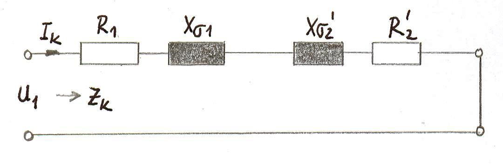
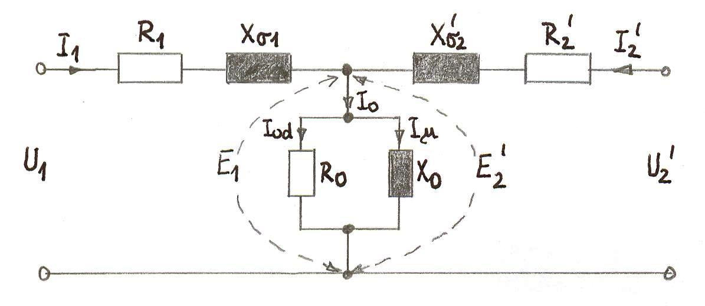
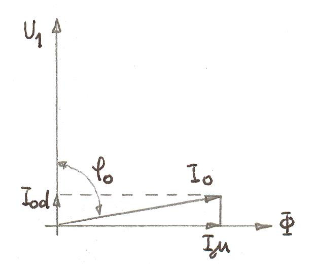
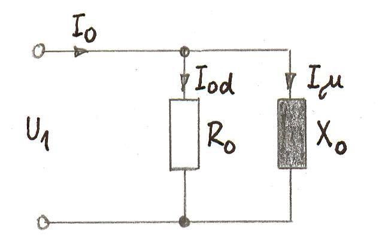

Naloga: Parametri nadomestne sheme
Enofazni transformator s podatki $S_n = 50 \text{ kVA}; U_{1n} = 2400 \text{ V}; U_{2n} = 400 \text{ V}; f_n = 50 \text{ Hz}$ ima sledeče upornosti: $R_1 = 0,72 \ \Omega; R_2 = 0,07 \ \Omega; X_{\sigma 1} = 0,92 \ \Omega; X_{\sigma 2} = 0,009 \ \Omega; X_0 = 4,5 \text{ k}\Omega; R_0 = 34 \text{ k}\Omega$.
- Narišite nadomestno shemo transformatorja glede na primarno stran in izračunajte reducirane vrednosti sekundarnih parametrov.
- Izračunajte tok kratkega stika in kratkostično napetost, če sta sekundarni sponki vezani kratko.
- Izračunajte delovno in jalovo komponento toka prostega teka.
a) Nadomestna shema in redukcija parametrov
Da lahko transformator, ki ima dve ločeni navitji z različnimi napetostmi, računsko obravnavamo kot enotno električno vezje, ga nadomestimo s t.i. četveropolom. Težava je v tem, da primarna ($E_1$) in sekundarna ($E_2$) inducirana napetost nimata istega potenciala. Zato uvedemo navidezno izenačitev – "redukcijo" sekundarnih veličin na primarno stran, tako da velja $E_1 = E_2'$.

Slika 1: Polna nadomestna shema transformatorja v obliki četveropola z reduciranimi sekundarnimi vrednostmi.
Ob zanemaritvi stresanega magnetnega polja je glavni magnetni pretok obeh navitij enak ($\Phi' = \Phi$). Iz Faradayovega zakona ($E = 4,44 f N \Phi$) izpeljemo pravilo redukcije napetosti:
Napetosti se torej reducirajo premo sorazmerno z razmerjem števila ovojev $p = N_1 / N_2$. Pri tokovih pa moramo ohraniti enakost magnetnih vzbujanj (ampernih ovojev), torej $I_2' N_1 = I_2 N_2$, iz česar sledi, da se tokovi reducirajo obratno sorazmerno:
Ključno je kontrolirati ohranitev prenesene moči na sekundarni strani ($S' = S$):
Iz enakosti celotne moči izhaja tudi enakost posameznih komponent moči (npr. Joule-ovih izgub). Izgubna moč sekundarja se ne sme spremeniti:
Od tu izrazimo reducirano upornost $R_2'$:
Upornosti (in impedance) se vedno reducirajo s kvadratom prestavnega razmerja!
Izračunajmo sedaj naše reducirane sekundarne parametre. Prestavno razmerje $p$:
b) Tok kratkega stika in kratkostična napetost
V kratkem stiku sta izhodni sponki direktno povezani. Ker je impendanca sekundarnega dela majhna, postane tok zelo velik. Zaradi tega pade prečno magnetenje ($I_0$) na izjemno majhno vrednost. Zato v nadomestni shemi pri kratkem stiku prečno vejo $X_0$ in $R_0$ povsem zanemarimo.

Slika 2: Poenostavljena nadomestna shema v primeru kratkega stika.
Celotna kratkostična impedanca $\hat{Z}_k$ je vsota zaporedno vezanih primarnih in reduciranih sekundarnih upornosti:
Izračunamo absolutno vrednost impedance $|Z_k|$ (Pitagorov izrek):
Kratkostični tok $I_k$, če bi transformator priključili neposredno na nazivno napetost $2400 \text{ V}$:
Nazivni tok tega transformatorja je $I_{1n} = S_n / U_{1n} = 50000 / 2400 = 20,83 \text{ A}$. Tok $692 \text{ A}$ je kar 33-krat večji od nazivnega! Dinamične sile rastejo s kvadratom toka (torej so več kot 1000x večje od običajnih), kar bi tuljave dobesedno razneslo, termično segrevanje pa bi nemudoma stalilo baker. Kratki stik mora biti prekinjen z varovalkami v nekaj milisekundah!
Za varen laboratorijski preizkus kratkega stika, s katerim izmerimo $Z_k$, priključimo transformator na močno znižano napetost – tako, da po kratko sklenjenem navitju steče točno nazivni tok $I_{1n}$. To pritisnjeno napetost imenujemo kratkostična napetost $U_k$:
Proizvajalci podajajo relativno kratkostično napetost $u_k$, izraženo v odstotkih nazivne napetosti:
c) Komponente toka prostega teka
V prostem teku sekundarne sponke niso priključene (tok na sekundarju je nič). Posledično se padci napetosti na vzdolžnih elementih ($R_1, X_{\sigma 1}$) lahko zanemarijo, saj prevladuje le visoka impedanca prečne veje ($R_0, X_0$).

Slika 3: Poenostavljena nadomestna shema v primeru prostega teka.
Delovna komponenta ($I_d$): Krije izgube v železu (histereza in vrtinčni tokovi) – teče skozi $R_0$.
Jalova magnetilna komponenta ($I_\mu$): Postavlja in vzdržuje magnetni pretok v jedru – teče skozi $X_0$.
Skupni tok prostega teka $I_0$ sestavimo vektorsko (uporabimo absolutno vrednost obeh pravokotnih komponent):
Ugotovimo, da v toku prostega teka močno prevladuje magnetilni del ($I_\mu$), in je ta tok izjemno majhen glede na nazivni tok ($I_0 \approx 2,58\% \ I_n$).

Slika 4: Kazalčni diagram napetosti in tokov v prostem teku.
Nazivni tok vs Kratkostični tok
Skala toka prikaza vizualno razliko med nazivnim stanjem in kratkim stikom.
Preverite obnašanje kratkega stika z določitvijo pritisnjene napetosti in izbrano upornostjo.
Trenutni rezultati:
Tok v kratkem stiku $I_k = $ 691.6 A
Nazivni tok $I_n = 20.83 \text{ A}$
Razmerje $I_k / I_n = $ 33.2
Preveri svoje znanje
1. Kviz: Sprememba relativne kratkostične napetosti
Predpostavimo, da izračunani tok kratkega stika pri nazivni napetosti znaša $I_k = 500 \text{ A}$ in da je nazivni tok stroja ostal $I_n = 20,83 \text{ A}$. Koliko bi znašala relativna kratkostična napetost $u_k$ v odstotkih?
Prikaži namig/rešitev
Obstaja direktna relacija: $u_k (\%) = \frac{I_n}{I_k} \cdot 100\%$.
$u_k = \frac{20,83}{500} \cdot 100\% = 0,04166 \cdot 100\% = 4,166\%$.
2. Kviz: Laboratorijski preizkus kratkega stika
Zakaj pri določanju $Z_k$ in $P_{Cu}$ v laboratoriju transformator napajamo z znižano napetostjo ($U = U_k$) namesto z nazivno ($U_n$)?